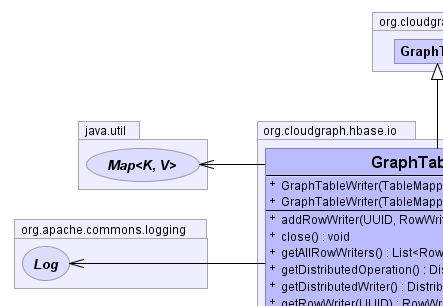
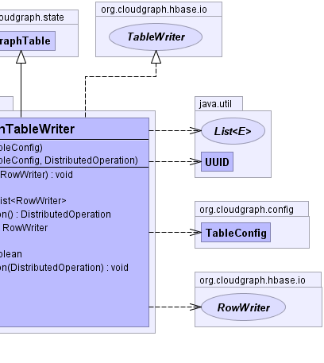
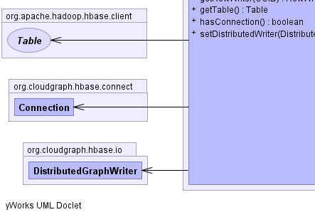
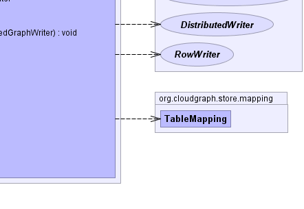

public class GraphTableWriter extends GraphTable implements TableWriter
Acts as a container for one or more RowWriter elements and
encapsulates the HBase client Put and Delete operations for use in write operations across one or more graph
rows within a table.
RowWriter|  |  |
|  |  |
tableConfig| Constructor and Description |
|---|
GraphTableWriter(TableMapping table) |
GraphTableWriter(TableMapping table,
DistributedGraphWriter distributedOperation) |
| Modifier and Type | Method and Description |
|---|---|
void |
addRowWriter(java.util.UUID uuid,
RowWriter rowContext)
Adds the given row writer context mapping it to the given UUID.
|
void |
close()
Closes tables and connections.
|
java.util.List<RowWriter> |
getAllRowWriters()
Returns all row writer context values for this table context.
|
DistributedOperation |
getDistributedOperation()
Returns the distributed context associated with this table operation
context.
|
DistributedWriter |
getDistributedWriter() |
RowWriter |
getRowWriter(java.util.UUID uuid)
Returns the row writer context for the given UUID
|
org.apache.hadoop.hbase.client.Table |
getTable()
Returns the HBase table pooled connection for this context.
|
boolean |
hasConnection()
Returns whether there is an active HBase table pooled connection for this
context.
|
void |
setDistributedWriter(DistributedGraphWriter distributedGraphWriter) |
getTableConfigclone, equals, finalize, getClass, hashCode, notify, notifyAll, toString, wait, wait, waitgetTableConfigpublic GraphTableWriter(TableMapping table)
public GraphTableWriter(TableMapping table, DistributedGraphWriter distributedOperation)
public DistributedWriter getDistributedWriter()
getDistributedWriter in interface TableWriterpublic void setDistributedWriter(DistributedGraphWriter distributedGraphWriter)
setDistributedWriter in interface TableWriterpublic org.apache.hadoop.hbase.client.Table getTable()
TableOperationgetTable in interface TableOperationpublic boolean hasConnection()
hasConnection in interface TableOperationpublic RowWriter getRowWriter(java.util.UUID uuid)
TableWritergetRowWriter in interface TableWriteruuid - the UUID stringpublic void addRowWriter(java.util.UUID uuid,
RowWriter rowContext)
TableWriteraddRowWriter in interface TableWriteruuid - the UUIDrowContext - the row writer contextpublic java.util.List<RowWriter> getAllRowWriters()
TableWritergetAllRowWriters in interface TableWriterpublic DistributedOperation getDistributedOperation()
getDistributedOperation in interface TableOperationpublic void close()
throws java.io.IOException
TableWriterclose in interface TableWriterjava.io.IOExceptionCloudGraph® is a registered trademark of TerraMeta Software, Inc. Copyright © 2014 - All Rights Reserved.